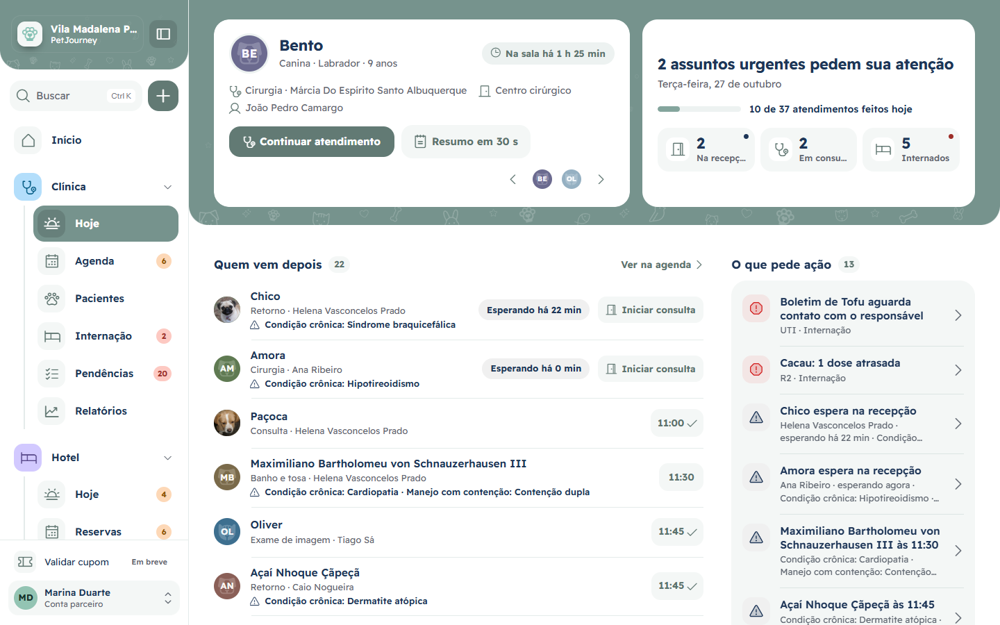

Sua clínica organizada, seus clientes com o pet em dia.
Agenda, prontuário, receitas e vacinas em um só portal. O que você registra no atendimento chega ao celular do responsável pelo pet.
Gratuito para a clínica

O dia da clínica no portal e o app do responsável.
Quem é a PetJourney
A PetJourney é uma plataforma de saúde para animais de estimação de qualquer espécie, com duas pontas ligadas: o portal, onde a clínica trabalha, e o aplicativo, onde o responsável acompanha o pet. O histórico pertence ao pet e à família. A clínica autorizada lê e escreve nele.
O que a clínica já tem hoje
Quem está em sala, quem chega e o que pede ação.
Link de agendamento, fila de espera, faltas e retornos.
Atendimento por seções, com a pré-consulta do app.
Receitas e atestados assinados, com bulário.
Quem tem dose para vencer, mês a mês.
Mapa de vagas, doses e boletim enviado ao app.
Estoque de remédios e relatórios do mês.
Acesso por pessoa e pacientes vindos de planilha.
Como a PetJourney ajuda
Para a clínica
- Menos telefone. O horário é pedido pelo link ou pelo app, com lembrete na véspera.
- Menos retorno perdido. Retornos, faltas e vacinas a vencer em uma só lista.
- Consulta mais rápida. O pet chega com histórico, alergias, peso e pré-consulta.
- Começa sem redigitar. Os pacientes entram por planilha. Tudo funciona no navegador.
Para o responsável pelo pet
- Tudo do pet em um só lugar. Vacinas, consultas, exames, remédios, peso e documentos.
- Lembrete antes de vencer. Vacina, remédio e retorno avisam no celular.
- Sem papel perdido. A receita da clínica chega ao app e vira lembrete de dose.
- Leva o histórico junto. Carteirinha digital e acesso para outro veterinário por código.